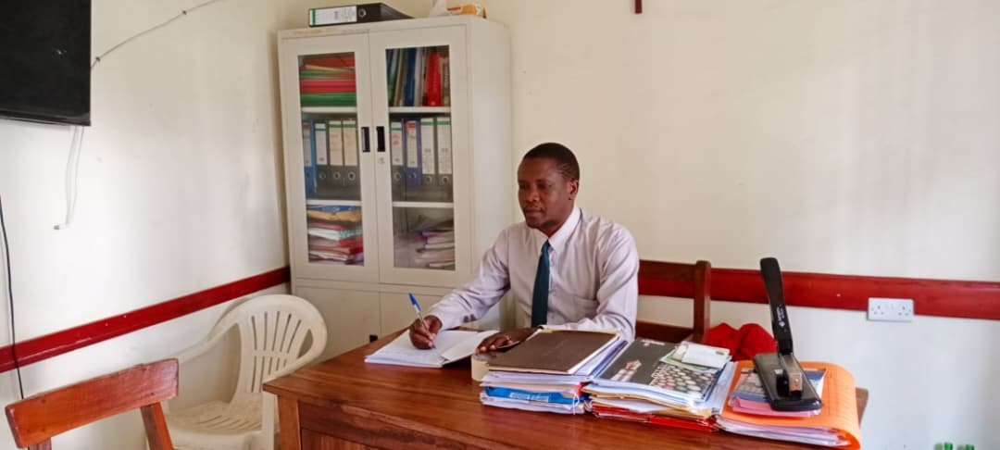
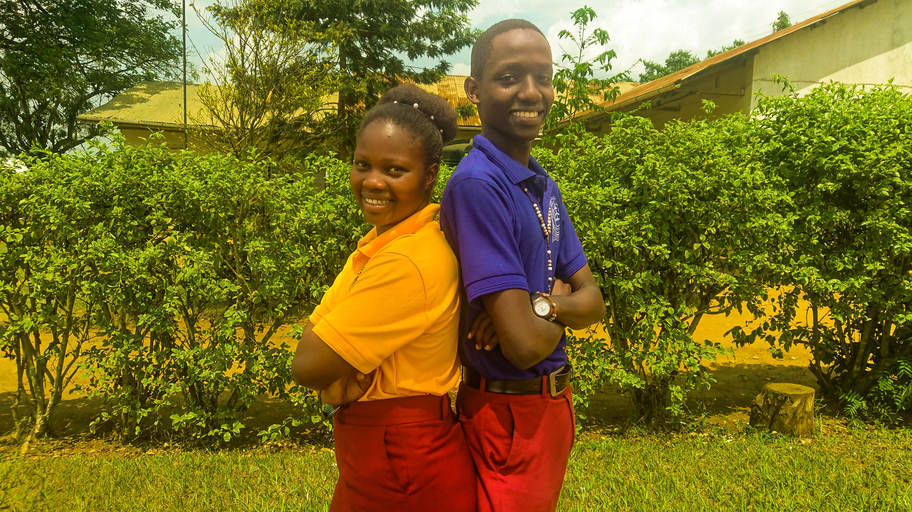
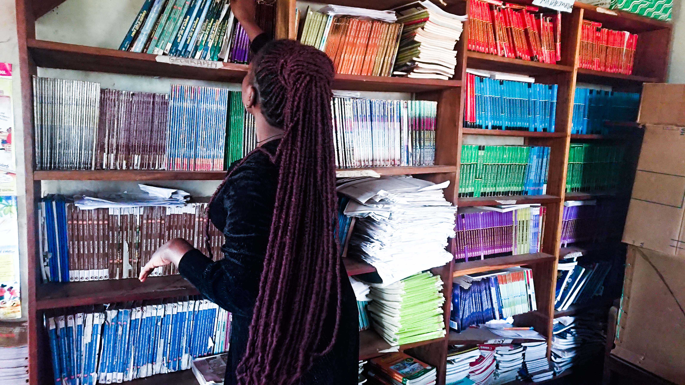
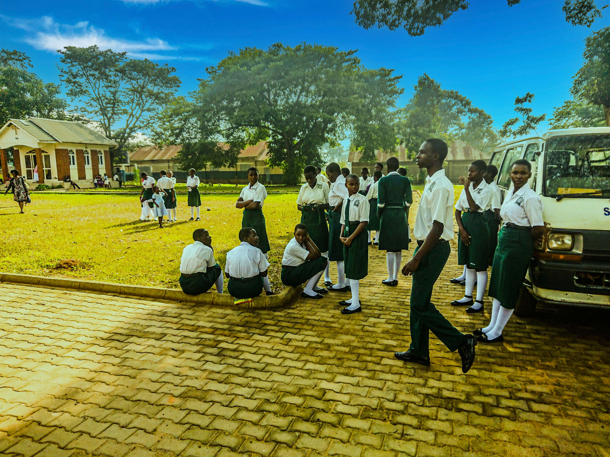
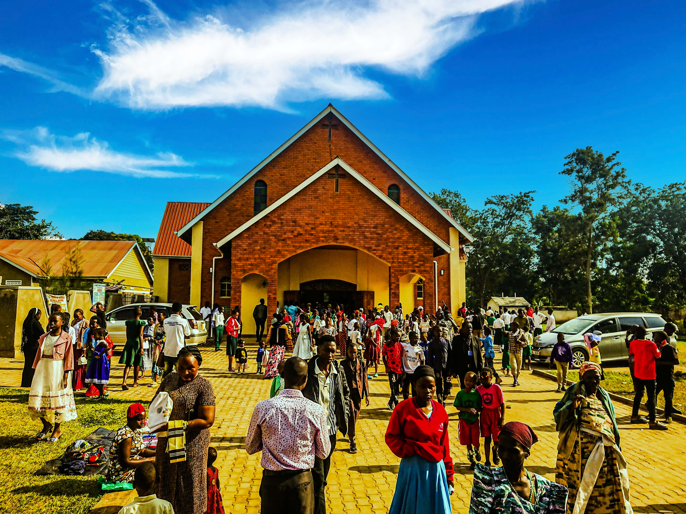
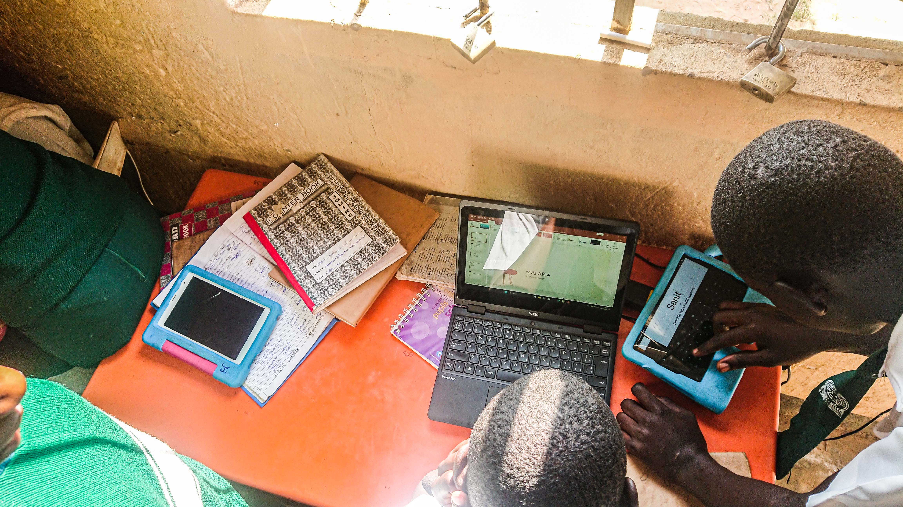
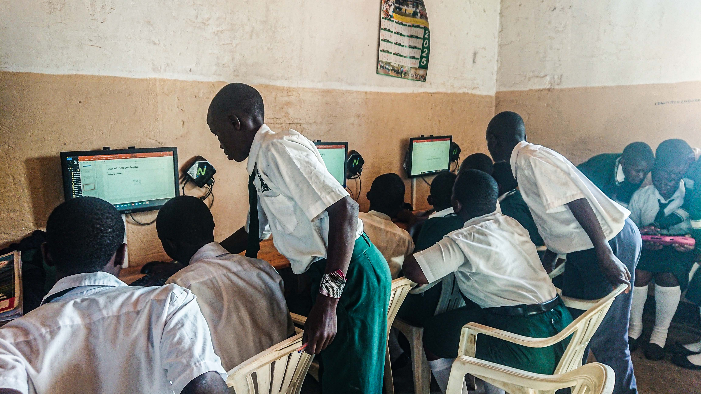
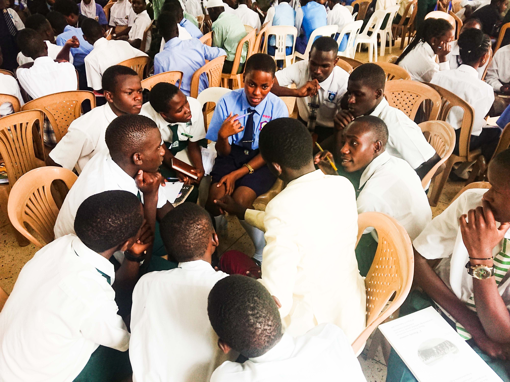
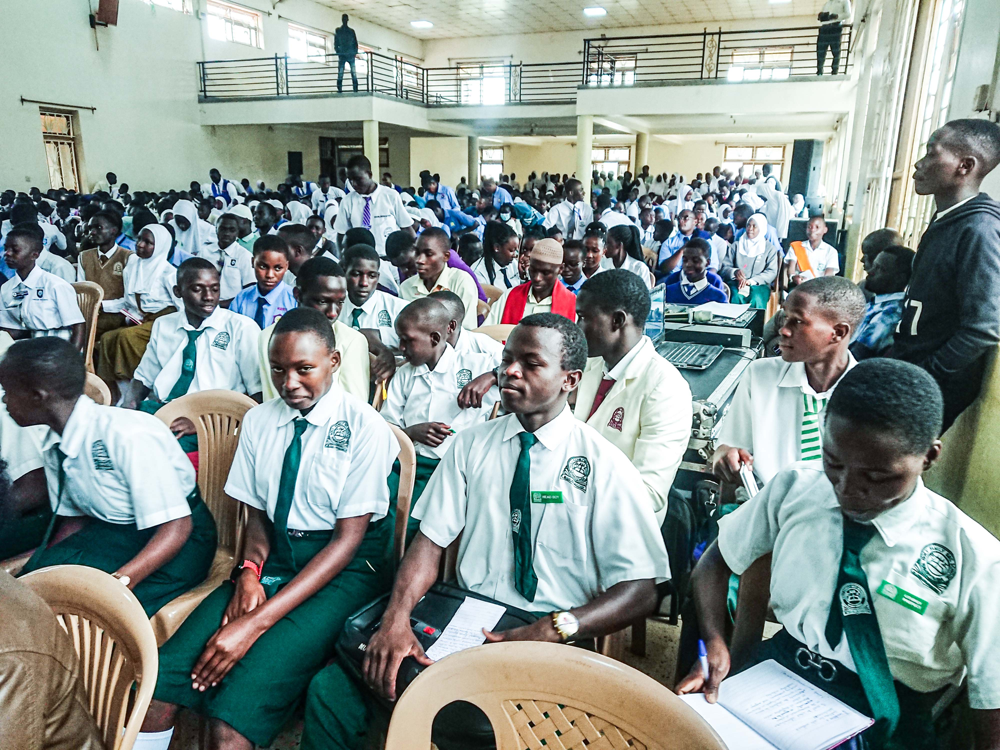

Headteacher
Welcome to Holy Family Secondary School Namayumba, where academic excellence, Christian values, and holistic education come together to prepare learners for a successful future. Since our establishment in 1999, we have remained committed to nurturing God-fearing, disciplined, and responsible young men and women who are equipped with the knowledge, skills, and character needed to make a positive impact on society. Guided by our motto, "In God We Succeed," we provide a safe, supportive, and inspiring learning environment where every learner is encouraged to discover their potential and strive for excellence. I warmly invite you to explore our website and learn more about our academic programmes, co-curricular activities, and vibrant school community. Whether you are a prospective student, parent, alumnus, or visitor, we look forward to welcoming you to the Holy Family family. May God bless you.
— Mr. Ssenabulya Robert, Headteacher
To be a leading institution that nurtures students into responsible, innovative, and holistic citizens.
To provide quality education that integrates academic excellence, ICT innovation, and moral values for lifelong success.
In God We Succeed
We are well equipped to ensure continuous academic growth, ranking among the top schools in performance.
Built around strong Catholic values, with weekly mass, adoration, and daily prayers to nurture faith.
Modern facilities and structures foster effective teaching and learning across all disciplines.
A wide range of activities promote holistic development in knowledge, talent, and creativity.
Phone: (+256) 742 055 004
WhatsApp: (+256) 772 845 975
TikTok: HOFASS UPDATES